Vector Display Tab

OpenCPN makes a serious effort to be compliant with IHO standards for ECDIS display of cartography.
Starting with vector charts requires some learning. In some respect they are different than paper/raster charts. This page deals mainly with the specifics of OpenCPN and is not a vector-chart tutorial.
See David Burch's book “Electronic Chart Navigation”, and the 2013 (or later) US Chart 1, available from: US ChartNo1.pdf .
Note: On the forum there are quite a few questions regarding these chart symbols.
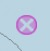 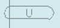 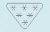
Read on to find out more. Chart Information Objects and Quality of Data

First One very important setting for vector charts is handled directly from the main toolbar. This button toggles all text displayed on a vector chart On and Off. The hotKey “T” is an alternative for toggling the text. In OpenGL mode, all text will always be horizontal when using the “Course Up” option.
Second Double clicking on a vector chart, as long as the cursor hasn't changed to a green arrow near the edges, brings up an information dialog, displaying the available vector-chart information at the selected point. Scroll down to see all the information. An alternative to double clicking is right-clicking an select “Object Query”. Note that a single normal (left) click will center the chart at that point.

The example shown above is the result of double-clicking on a lighthouse in a busy area.
Exactly what is shown in this dialog depend on the settings described below in “Display Categories”.
Third It is possible to select what font is used for the text on vector charts. There is an entry in Options > User Interface > Fonts in the dropdown menu select ChartTexts. Here you select what font-face to use, and a template size. Weight and final size of the displayed texts depends on the charts you are using, but if the charts contain various weights and sizes, they will all scale together depending on what size you select.
Options > Charts > Vector Charts Tab is where everything else is handled.
If the S63 chart plugin is active, there will also be a “S63 Charts” tab. .
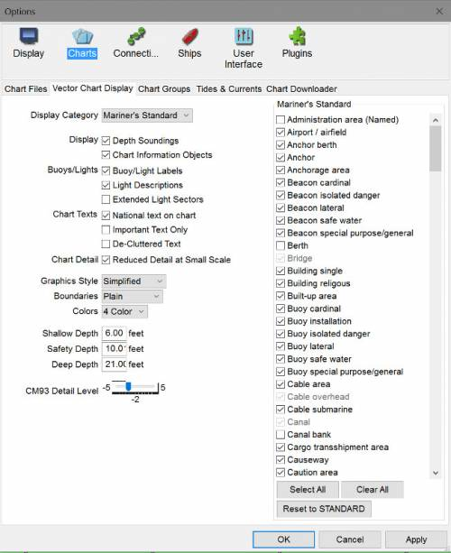
Display Categories
If you are new to OpenCPN and vector charts please start with the “All” Display Category, to avoid risks and possible confusion. The Display Category is selected from the drop down menu. More below.
Navigators have the choice of three different pre-defined presentations of ENC content, Base, Standard and All. OpenCPN also has the very flexible Mariners Standard, which is better described as “Mariners Choice”.
Base
- Displays general information, including coastline, safety-contour, isolated danger,
- buoy, beacon traffic separation zone, etc.
- From the IMO definitions:
- Display Base means the level of SENC information which cannot be removed from the display, consisting of information which is required at all times in all geographic areas and all circumstances. It is not intended to be sufficient for safe navigation.
Standard
- Everything in “Base” and aids to navigation, fairways, channel limits, restricted navigation zones, restricted areas, etc..
All
- Everything in “Standard” and more. This level shows all informatio, not contolled in other settings options. More about what the IMO ECDIS says about the content of these three levels. This is also a good choice for actual, underway, navigation, avoiding the possible risks involved in “Mariners Standard”. See more below.
Mariners Standard
- Reset to STANDARD button. Change the tick marks to match STANDARD.
- Select All button. Select all items.
- Clear All button. Clear all items.
- These buttons only work with Mariner's Standard.
- Users can use the filter tick box to set the display of items. A large set of filters, about 186, can be employed. They are all to the IHO S57 standard (Caris.com), but has been given a label that is easy to understand.
- Note that Mariners Standard gives the user a much wider choice of what to display, however it conforms to the approved IHO recommendations IHO S57 (s-57.com).
- NOTE: We now follow strictly the IHO recommendations. This modification will appear in the next OCPN Beta series. See FS#2091
- Items classed as DISPLAYBASE are always displayed in Mariners Standard, and may not be removed by the user.
- Following S52 guidelines, four special safety items (“OBSTRN”, “WRECKS”, “DEPCNT”, “UWTROC”) are also visible in BASE and Mariners Standard, if their attributes (depth relative to containing depth area, mainly) require them to be so displayed.
- The selected Safety Contour is always displayed in Mariners Standard.
- User is free to add/remove items whose classification would normally have them appear in STANDARD or OTHER categories, allowing user customization if desired. These selections will be persistent across OCPN sessions.
- There is a “Reset to STANDARD” button, which does what it says.
WARNING - it is possible to suppress essential information with “Mariners Standard”. If in doubt, switch to the “ All ” Display Category, or use the “Select All” or “Reset to Standard” button for Mariners Standard.
- The first time you use a vector chart with a brand new installation you will see nothing, if you use Mariners standard. Why?
- The Mariners Standard list of Feature types is empty on a fresh install. When you load the first vector chart, the list is populated with the Features that are discovered on that particular vector chart.
- The default visibility of the added Features in Mariners Standard category now shows all features as the are discovered.
- If you load another ENC, any newly discovered Feature types are added to the list, again with viz=0, off. However, the visibility of Feature types as set previously by the tick boxes is not modified.
- Use the “Select All” button frequently until you have initiated all the charts you intend to use and-or the feature list is fully populated.
Vector Chart Hot Keys
The Hot Keys or Keyboard Shortcuts below all work in “ALL” and “Mariners standard”. The hotkeys also work in the other display categories, as long as the feature exists in the category. In “Base” for example, “S” works, but “L” does not. Features are toggled on-off with the keys.
Note: Hot Keys can be different for OS's. See Keyboard Shortcuts
- T Texts. The visible text is still affected by the settings in the Vector Charts settings tab.
- L Lights. Lighthouses as well as buoys etc are all affected.
- S Soundings.
- A Anchoring. This will affect information needed when anchoring. Anchor berth and Anchorage areas. Submarine cables and pipelines. Type of bottom. Mariners Standard -Anchor berth and Anchorage area display categories.
- O Chart Outlines.
- Watch the active GIF image below as it changes using hot keys.
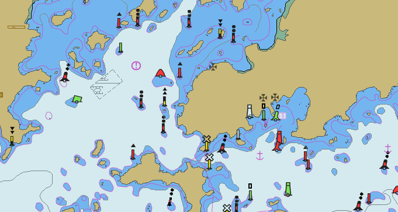
Practical Use
A general recommendation would be to use the “All” display category or “Mariners Standard” with “Select All” marked , and then switch of certain features as required. As an example let's look at passing through the British gas fields in the SW North Sea
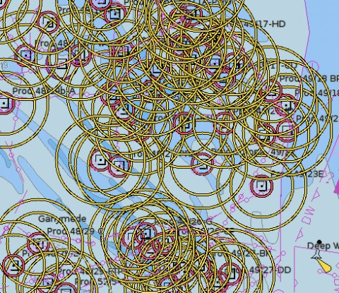
This is not easy, so we want to get rid of all those red and yellow circles.
Double click on one of the platforms, square with a dot.
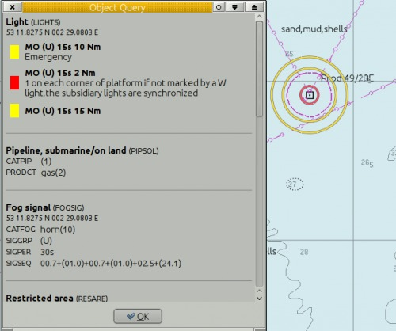
At the top it reads “Light (Lights)”, which means that you clicked on a light, which belongs to the Feature Class “Lights”. Find “Light” in the Mariners Standard list of available filters, and uncheck it.
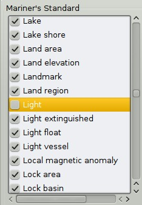
Press the “Apply” button
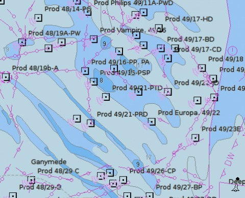
Much better In this particular case, there is a shortcut, use the Hot Key “L” to toggle all lights on/off.
Display
Depth Soundings
Turns the depths on and off. Other settings also affects when soundings are displayed, for example “Reduced Detail at Small Scale”. The bold black numbers are not soundings. Instead they refer to heights of nearby islets or cays. On official paper charts the soundings are printed in italics.
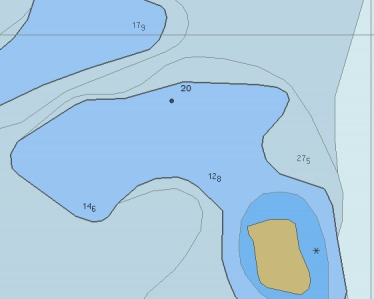
The bold number 20 refers to the land height of the unnamed cay SW of the number.
Safety Depth is set to 20 m, so the 20 m contour stands out in black.
How soundings behave when zooming. “Chart sounding symbols” are represented by small raster images. As a chart is zoomed in, these raster symbols will increase in size by about 2x. Currently they increase in size well after the “Overzoom” notice, for the largest scale chart available.
Chart Information Objects
Provides information about the chart itself. With this switch on, an object query reveals such information as the buoy system for the area, the Quality of the Survey, the latest NTM update and sources for the chart.
On raster-charts there is often a diagram showing the sources and age of surveys of the charts.
On vector-charts, when activated, symbols are shown all over the screen. An object query of these symbols gives the details. When using “Mariners Standard” and “Chart Information Objects” is ticked, it is possible to get rid of the quality symbols covering the chart by unchecking “Quality of data”.
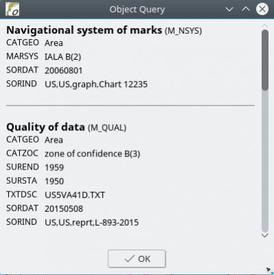
- On paper or Raster charts there is usually a source diagram showing the dates of the survey of different parts of the area covered by the chart.
- If the source is from ,say 1850, we know that it's an unreliable lead-line survey. On the other hand if it's a recent survey done with a multi-beam sounder it's a quite reliable chart.
- The same info is present in modern vector charts, but in a different format. Click image for larger version Name: rty.jpg Views: 7 Size: 48.5 KB ID: 157270 This is essential info about the reliability of the chart. At the same time you definitely don't want to see this info all the time. To see this information in OpenCPN you have to activate “Chart Information Objects” in vector settings.
- Most users just want to get rid of the triangles, but please consider that information informs you about the Quality of the Survey Documentation.
QUALITY OF DATA
- Category of Zone of Confidence = Un-assessed.
- The feature being rendered is S57 Text relating to M_QUAL, called “Quality of Data” in “Mariners Standard”
- This is a meta-object describing the quality of data shown. The Attribute of interest is CATZOC, or “Category of Zone of Confidence”.
- The value on most US ENC's is “6”, or “Un-assessed”. Thus, the 'U'.
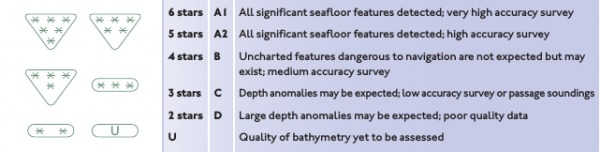
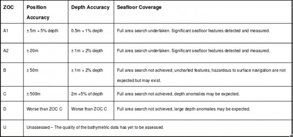
How to remove those "U" and *** on my vector charts (M_QUAL and CATZOC)?
- In Options > Charts > Vector Charts Tab when using Display Category “All”, Uncheck “Chart Information Objects” which hides the “U” symbols .
- In Options > Charts > Vector Charts Tab for a finer grain control when using Display Category “Mariners Standard”, In the selection List Box, Uncheck “Quality of Data” which hides the “U” symbols.
Buoys-Lights
Bouy-Light Labels
Displays names and purposes of aids to navigation, such as number or name of buoys, information about conspicuous objects etc.
Light Descriptions
This tick box control display of light characteristics. Checking this displays a label with a text describing the marker or lighthouse's characteristics.
Extended Light Sectors
It is often difficult, on a vector chart, to see exactly what the light-sectors are supposed to do.
Activating the Extended Light sectors clarifies the situation. All sectors are extended and leading white sectors are emphasized in yellow and extend the full nominal range of the light. Just hold the cursor over a light and the extended sectors are activated.
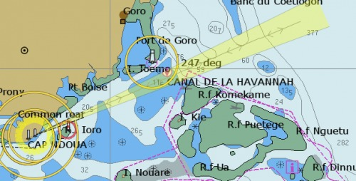
Light sectors as narrow as 0.3° are displayed.
This sector is 0.5°.
A light sector is extended if:
The words “Leading” or “Directional” can be found in the Object Query.
Otherwise, the rules are
- The sector is < 15° wide.
- It is White.
- The light also has Red and-or Green sectors.
These rules work quite well, but there are exceptions that are difficult to catch.
As always, it's the responsibility of the navigator, how a light and its sectors are used for practical navigation.
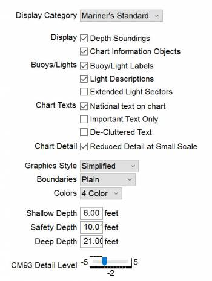
The parameters above are described in more detail below.
Chart Text
National text on chart
Vector charts may have attributes with the texts in the national language. For example a Russian chart with texts in Cyrillic. With this option activated OpenCPN will display text in the local language and character set, in this case Russian written in Cyrillic.
Important Text Only
Displays only a bare minimum of text essential for navigation, such as course and bearing in a leading line (range) and bridge clearances.
De-Cluttered Text
Even when using “Reduced Detail at Small Scale”, there are cases when text labels overlaps or overwrites other labels and creates a cluttered impression. Ticking this box tries to clear the view, dropping overlapping text labels in the interest of legibility. The labels that get dropped are the last that would have been drawn. But, as there is no built-in priority scheme for text labels in ENC vector charts, this setting may hide needed information.
Chart Detail
Reduced Detail at Small Scale
A Check makes sure that a minimum scale is required before certain objects are shown. If this box is not checked, everything is always shown, leading to very cluttered view at small scale (zoomed out).
Graphics Style
Paper chart
Draw the markers and lights just like the printed paper chart.
Simplified
Uses icons to represent the same. Some like the one and some the other, a matter of taste. Paper Chart mode closely follows the IHO standard standard in this area. This mode is currently more developed than the simplified mode, as it has a higher priority in the development effort.
Boundaries
Plain
Normally just uses a dashed line.
Symbolized
Also uses triangles pointing into the area.
Colors
Depth on the chart can be displayed with either 2 or 4 colors. This setting is closely related to the “Depths Settings”.
2 Colors
With 2 Colors and using a relatively large scale,
- Areas with depth less than “Safety Depth” is blue
- the rest is white.
4 Colors
With 4 colors, there are different colors for areas less than “Shallow Depth”,
- Areas between “Shallow Depth” and “Safety Depth”
- Areas between “Safety Depth” and “Deep Depth”
- Areas deeper than “Deep Depth”.
Depth Settings
Units
Units for depths is set in Options > Display > Units. All depths units are rounded off to the nearest number. If the value is half way between, the nearest higher number is used. Underlined values indicates drying heights.
Feet
Only whole digits are shown. A value of 12 feet covers all soundings between 11.5 feet and 12.4 feet.
Meters
Meters are shown as whole numbers for depths greater than 30 m. Depths below 30 m are shown as whole meters and decimeters as subscript, like this 127 This is the same as 12.7 meters and is shown for all soundings between 12.65 m and 12.74 m.
Fathoms
Fathoms are shown as whole numbers for depths greater than 31 fathoms. Depths below this value are shown as whole fathoms and tenths of fathoms as subscript. Compare to the notes above for meters.
Shallow, Safety and Deep depths
Safety Contour
The most important of these three settings, it affects the presentation of depths and dangers. The safety depth directly affects the displayed bold safety contour.
- OpenCPN can only display contours that are already built into the chart. If the safety depth is between two built in contours, the deeper one will be the safety contour, displayed bolder than the other contours.
- Depths less than the safety depths will be printed in black, depths greater than this value will be printed in gray. So it is possible to see gray depths inside the safety contour, depending on settings.
- One example of how the safety depth affects the chart display is how isolated dangers, for example a wreck is displayed.
The safety contour is 3.6 m and the wreck is marked by the magenta cross, as the wreck is surrounded by safe water but the depths over the wreck is less than the safety depth.
The safety contour is 5.4 m and the wreck is marked as wire swept to 3.3m.
Other Settings
Important as they affect how the different depths are colored.
- They can help you identify a deep channel for example, or they can, in the worst case scenario, prevent you from being aware of a shallow area.
- There is no setting that fits all circumstances. For example a Sea Mount with a depth of 20m in the middle of an ocean should be regarded as “shallow” and be avoided, while 20 m depth in a harbor approach in protected water, probably is safe.
- The Depth Settings controls the coloring of the water as a function of depth.
- By setting the Safety and Deep water right you will have a visible border to show when to take care about shallow water.
CM93 Charts and ENC
Work very similar. The charts contain depth area features according to fixed depth cutoff zones, usually 5, 10, and 20 meters.
- Intermediate values are not available in the database, if you select a value between those available, OpenCPN chooses the next higher value available for display of color.
- The charts are inconsistent in this area, depending on the country issuing the original charts. For example in UK and the Netherlands the depth contours in CM93 are 2, 5 and 10 meter while in US the are based on feet but expressed in meters, such as 3.7, 5.5, 9.1 and 18.3 m.
- Generally for both ENC and CM93, find these fixed depth cutoffs by double-clicking so the Object Query dialog pops up. The last entry is usually Depth Area. The two values in the range, represents these built in cutoffs.
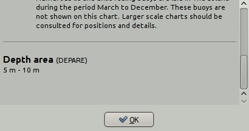
An example from UK with cutoff values of 5m and 10m. If for example as is the case on the South China Sea Hydrographic Commissions charts, the shallowest area has a range “0 m - 10 m”, there is, in most cases, no point in setting “Shallow Depth” to anything but 10 m. Find out these cut off depth for your area and set the “Depth Settings” with this knowledge together with your preferences and activity.
With all the reservations above, the general case for 4 colors, will be described.
Shallow Depth
Will color all water areas with water depths shallower than the set depth to a dark blue color. Soundings are in black.
Safety Depth
Water deeper that Shallow but shallower that this depth will have a paler blue color. The Shallow Depth contour clearly marked with a thicker black borderline. Soundings less than this depth are in black, while soundings greater than this value are gray.
Deep Depth
Water deeper than Safety Depth but less than Deep Depth will display a light gray color. The Safety Depth contour is clearly marked with black borderline. Water deeper than Deep Depth is displayed in white.
Finally a word about drying heights, displayed in green. There is no detailed information available for drying heights, neither in CM93 ver2 nor in many ENC charts. Some ENC charts have negative ranges, for example “-2 m - 0 m” in areas with drying heights. This adds very little, as it really only gives the information that the drying height is less than the first value in the range, in an area of unspecified size.
This situation is changing though. A set of new charts released in april 2012, by the Dutch Authorities, sets a standard for others to follow in this regard. See picture below. Modern Australian S63 charts are equally good.
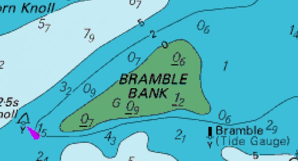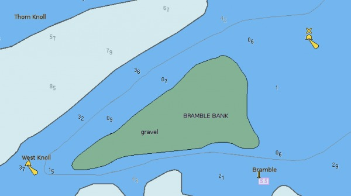
While a raster chart tells us that we need a Height of Tide that is 1.2m + safety margin + the draft of our own vessel.
Heights of islands etc. are not available in CM93, while ENC charts, in many cases, have info about heights of summits and some contour lines. Is Balls Pyramid a high Island, that the name implies, or is it named with the same sarcastic humor as “Greenland” ? CM93 can't tell.
CM93 Detail Level
The CM93 charts slider control that allows the user to adjust the screen complexity to suit the actual situation as well as the available processor capability.
Normal settings depend on a combination of personal preferences and present usage of map. To see more details, the “CM93 Detail Level” slider, can be set to a higher positive number or for navigation in shipping lanes to a negative numbers. Typical zoom level 5 is good for fishing when as much details are possible is of interest. Zoom level of +1, zero or -1 is usually fine for normal use.
Positive values give more detail, but at a cost:
- It simply takes longer to render larger scale charts covering more screen real estate.
- There will be more instances of gray (NODATA) areas surrounding the larger scale charts as you zoom out, unless quilting is activated.
- It can become dramatically slower if high detail is specified, and chart outlines are requested. In this case, the program has to read a lot more cells to get their outlines.
- Conversely, negative values give less detail. Zooms are faster.
- The slider can also be activated through the “d” hotkey, and displayed directly on the screen.
Vector Palettes
It's possible to change the whole look of a vector chart. One example below….
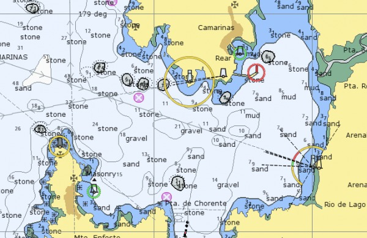